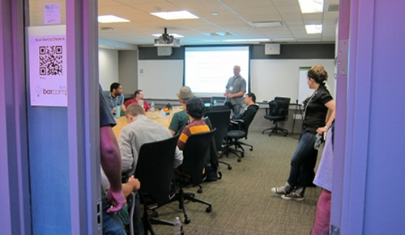

BarCamp is an ad-hoc gathering born from the desire for people to share and learn in an open environment. It is an intense event with discussions, demos, and interaction from attendees. The event doesn't cost any money, but there is a price: all attendees must give a demo, a session, or help with one. Anyone with something to contribute or with the desire to learn are welcome and invited to join. When you come, be prepared to share with barcampers. When you leave, be prepared to share it with the world.

Saturday June 9th from 10am to 6pm
Microsoft Offices
1290 Avenue of the Americas (6th Ave and 52nd St)
Join us on Friday June 8th from 6:30pm to 9:30pm at 230 Fifth for an awesome party thrown by BarCampTour.
230 Fifth
230 5th Ave (5th and 27th)
Have a question about the event? Looking to help out? Feel free to drop me an email at shane [at] barcampnyc [dot] org or send me a tweet.